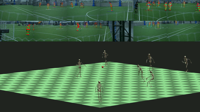
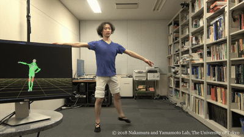
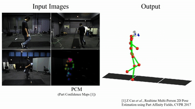

Projects
|  |
Synergetic Reconstruction from 2D Pose and 3D Motion for Wide-Space Multi-Person Video Motion Capture in the Wild |
||
|  |
VMocap: realtime video motion capture and analysis of human movements |
||
|  |
Video Motion Capture from the Part Confidence Maps of Multi-Camera Images by Spatiotemporal Filtering Using the Human Skeletal Model |
Affiliation
- Jan 2021 - current: Research engineer, Tokyo Laboratory 19, SONY Corporation
- Nov 2018 - Dec 2020: Collaborative researcher, Dept. of Mechano-informatics, The University of Tokyo
- Apr 2018 - Dec 2020: Research engineer, Service Innovation Dept., NTT DOCOMO, Inc.
- Oct 2016 - Mar 2017: Exchange student, Dept. of Electrical Engineering and Information Technology, Technical University of Munich
- Oct 2015 - Mar 2018: Master's student, Dept. of Mechano-informatics, The University of Tokyo
- Apr 2015 - Sep 2015: Dept. of Mechanical and Control Engineering, Tokyo Institute of Technology
- Apr 2011 - Mar 2015: Undergraduate student, Dept. of Mechano-Aerospace Engineering, Tokyo Institute of Technology
Education
-
Master's degree (Engineering in Mechano-Informatics) - Mar 2018
- The University of Tokyo, Japan
- Adviser: Prof. Yoshihiko Nakamura
- Bachelor's degree (Engineering in Mechanics) - Mar 2015
- Tokyo Institute of Technology, Japan
- Adviser: Ass. Prof. Takatoki Yamamoto
Honors and Awards
- IROS 2018 Best Paper Award Finalists, 2018 [Link]
- Miura Award, The Japan Society of Mechanical Engineers, 2018 [Link]
Media
- 『子供の科学 4月号』: 複数人のモーションキャプチャをカメラ映像だけで行う!? (Japanese), 2020 [Link]
- ITmedia NEWS (Seamless): カメラ映像から複数人の動きを骨格・筋レベルで同時検出 東大とドコモがモーションキャプチャ技術発表 (Japanese), 2020 [Link]
- 日経 xTECH special: あと１年に迫った5Gサービス開始 ドコモのイベントで未来を探ってみた (Japanese), 2019 [Link]
- 毎日新聞: ＡＩで全身運動を即座に可視化 東大チーム開発 (Japanese), 2018 [Link]
- Seamless: 東京大学など、複数台のRGBカメラだけから人のモーションキャプチャをリアルタイムに行う技術「VMocap」を発表 (Japanese), 2018 [Link]
Others